From posed images to editable 3D scenes and robotic manipulation1:06 ·Download MP4
Abstract
We present ParticleSplat, a self-supervised object-centric representation learning method that decomposes scenes into latent particles through feedforward 3D Gaussian Splatting. Building on Deep Latent Particles (DLP), we extend the particle representation beyond 2D image space to capture the geometric structure needed for robotic manipulation.
Our model jointly encodes posed observations into a 3D object-centric latent space, then transforms each particle into an aligned field of 3D Gaussians whose composition reconstructs the scene.
Training with a novel view synthesis objective yields object masks without supervision and supports controllable scene editing through particle attributes. Evaluations on simulated and real-world data demonstrate the representation’s reconstruction and decomposition capabilities. On downstream imitation learning, ParticleSplat improves policy success on both RLBench and MimicGen, showing the value of combining object-centric structure with explicit 3D information.
A scene you can edit
Pick a point. Make the scene your own.
RLBench / Close JarInteractive 3D
Particle-aligned Gaussian splats
A little room to experiment.
Loads ~10 MB once. Everything runs in your browser.
Live reconstruction
XYZ
Click a ball to edit · Drag it to moveDrag background to orbit · Right-drag to pan · Scroll / pinch to zoom
Ready to explore.
Translucent markers select editable regions. Move and scale the reconstruction, then explore a camera range extending slightly beyond the two input views. Rotation and tilt are limited because unseen surfaces may be incomplete; edits do not simulate robot kinematics or physics.
An interactive illustration based on a held-out RLBench scene and a two-view, 50k-step checkpoint. The initial camera is an unseen intermediate view; native model resolution is 128 × 128. This prepared demo is separate from the benchmark results below.
Architecture
From posed observations to object-centric particles and compositional 3D Gaussians.
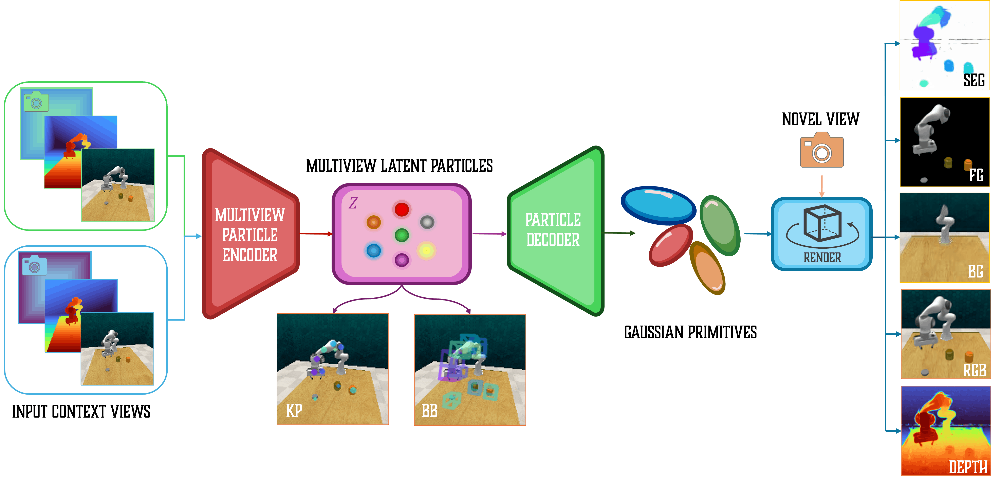
ParticleSplat overview. The view-aware encoder infers latent particles from RGB images, camera poses encoded as Plücker rays, and optional depth maps. Each particle is decoded into a local Gaussian field, lifted to world coordinates, and composed with the background for differentiable rendering. Keypoints (KP), bounding boxes (BB), and segmentation masks (SEG) follow from the particle structure.
Scene decomposition
In the clips, Ctx denotes a context input and GT the reference target view. Use the play controls to explore each silent video.
RLBench · single-view
A front-camera RGB-D observation conditions a sweep of novel viewpoints. The clips show reconstruction and particle decomposition of the same scene.
15.5 s per clip · Same scene and camera sweep across all eight views.
Real-world · multi-view
Two RGB context views from a handheld camera, without depth input. These clips show scene reconstruction and decomposition, not real-world policy execution.
42.8 s per clip · Same scene and camera sweep across all eight views. Overlapping particles are filtered with non-maximum suppression for visual clarity, as described in the supplement.
Results
Evaluating the representation through 3D reconstruction and downstream policy learning.
3D reconstruction
Novel-view synthesis in simulation and real scenes.
Quantitative results
Novel-view synthesis at 128 × 128, averaged over evaluation views and scenes. Higher PSNR and SSIM are better; lower LPIPS is better.
Reported reconstruction metrics from the paper.
Method
PSNR (dB)
SSIM
LPIPS
RLBench · single-viewOne front RGB-D context view
ParticleSplat (ours)
25.35
0.7293
0.3563
VAE-GS (no object-centric structure)
21.85
0.6858
0.4838
GNFactor
16.20
0.5273
0.6819
ManiGaussian
15.87
0.5154
0.6793
RLBench · multi-viewTwo RGB-D context views
ParticleSplat (ours)
28.77
0.8144
0.2565
VAE-GS (no object-centric structure)
25.93
0.7326
0.3404
Real-world · multi-viewTwo RGB context views; no depth input
ParticleSplat (ours)
24.24
0.8455
0.1153
VAE-GS (no object-centric structure)
20.33
0.4659
0.6587
PSNR: peak signal-to-noise ratio; SSIM: structural similarity; LPIPS: learned perceptual image patch similarity. RLBench uses four held-out target views; real-world evaluation uses every fourth view of the capture trajectory.
Qualitative results
Drag the divider to compare ground truth with ParticleSplat at the same novel camera view. You can also focus a slider and use the arrow keys.
RLBench · single-view RGB-D
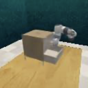
ParticleSplat
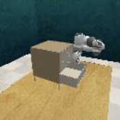
Ground truth
‹ ›
Scene 1
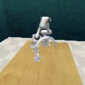
ParticleSplat
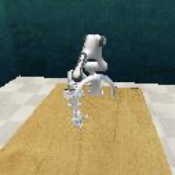
Ground truth
‹ ›
Scene 2
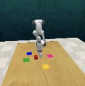
ParticleSplat
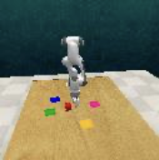
Ground truth
‹ ›
Scene 3
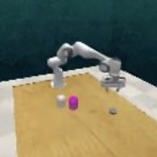
ParticleSplat
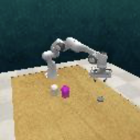
Ground truth
‹ ›
Scene 4
Real-world · multi-view RGB
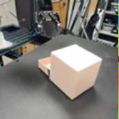
ParticleSplat
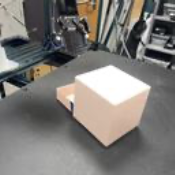
Ground truth
‹ ›
Scene 1
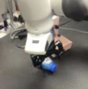
ParticleSplat
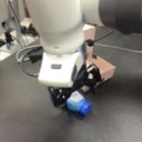
Ground truth
‹ ›
Scene 2
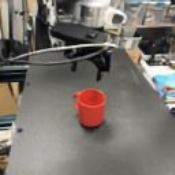
ParticleSplat
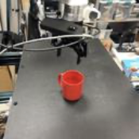
Ground truth
‹ ›
Scene 3
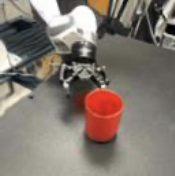
ParticleSplat
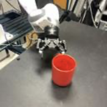
Ground truth
‹ ›
Scene 4
RGB panels extracted from the paper’s extended qualitative figures, in the original row order. No retouching or new evaluation; the real-world examples use two RGB inputs without depth.
Policy learning
Manipulation success with a frozen ParticleSplat encoder and the EC-Diffuser policy.
Quantitative results
Overall and per-task success rates on RLBench and MimicGen, averaged over three policy seeds.
Comparing representations. ParticleSplat, DLP, and VAE-GS share the EC-Diffuser policy on RLBench. On MimicGen, ParticleSplat, DLP, and 3D-DLP share EC-Diffuser. GNFactor, ManiGaussian, and EquiDiff use different policy architectures and are included as external references.
Representation ablations appear above baselines, separated by a horizontal line. DLP retains object-centric particles but has no explicit 3D geometry; VAE-GS retains 3D Gaussian splatting but has no object-centric structure. All bars show reported overall success on the same 0–100% scale.
RLBench · single-view
10 tasks · single-view RGB-D
20 demonstrations per task; evaluation on 25 episodes per task per seed. The policy observes the front camera and receives a language instruction.
73.0% overall success · +26.4 points over DLP with the same policy
Per-task results 10 tasks · mean ± standard deviation
RLBench · single-view. Success rate (%), mean ± standard deviation over three seeds.
Task
GNFactor
ManiGaussian
VAE-GS
DLP
ParticleSplat
Push buttons
18.7 ± 10.0
20.4 ± 12.2
22.3 ± 11.4
36.7 ± 8.9
57.2 ± 7.1
Meat off grill
57.3 ± 18.9
60.2 ± 18.2
58.8 ± 7.9
65.4 ± 4.1
76.0 ± 8.4
Slide block
20.0 ± 15.0
24.3 ± 12.8
25.7 ± 10.9
54.6 ± 5.2
92.3 ± 2.0
Drag stick
37.3 ± 13.2
92.3 ± 11.4
90.6 ± 7.8
93.1 ± 5.5
96.7 ± 2.5
Sweep to dustpan
28.0 ± 15.0
64.5 ± 13.4
46.9 ± 8.1
73.5 ± 7.3
90.6 ± 6.9
Turn tap
50.7 ± 8.2
56.2 ± 6.8
52.5 ± 6.3
36.2 ± 5.8
83.8 ± 4.6
Open drawer
76.0 ± 5.7
76.3 ± 6.2
73.1 ± 5.4
37.8 ± 9.6
88.4 ± 4.3
Put in drawer
0.0 ± 0.0
16.6 ± 3.2
12.1 ± 3.0
30.8 ± 4.7
78.4 ± 5.8
Stack blocks
4.0 ± 3.3
12.4 ± 3.2
8.6 ± 3.0
11.4 ± 4.6
19.4 ± 2.9
Close jar
25.3 ± 6.8
28.4 ± 5.4
29.6 ± 5.0
20.7 ± 4.9
54.1 ± 4.7
Overall (reported)
31.7
45.2
42.0
46.6
73.0
RLBench · multi-view
10 tasks · multi-view RGB-D
20 demonstrations per task; evaluation on 25 episodes per task per seed. Policies receive a fixed subset of camera views and a language instruction. All three representations use EC-Diffuser.
83.0% overall success · +23.6 points over DLP with the same policy
Per-task results 10 tasks · mean ± standard deviation
RLBench · multi-view. Success rate (%), mean ± standard deviation over three seeds.
Task
VAE-GS
DLP
ParticleSplat
Close jar
34.2 ± 5.6
41.7 ± 5.1
82.6 ± 4.3
Open drawer
79.3 ± 6.1
63.4 ± 8.7
91.2 ± 4.9
Sweep to dustpan
62.8 ± 7.4
83.6 ± 6.9
94.1 ± 6.2
Meat off grill
57.1 ± 8.6
66.8 ± 4.5
86.9 ± 7.6
Turn tap
72.9 ± 6.8
48.5 ± 6.2
91.4 ± 4.2
Slide block
47.9 ± 11.2
69.3 ± 5.6
94.2 ± 2.4
Put in drawer
31.4 ± 3.6
56.6 ± 5.1
86.3 ± 6.1
Drag stick
92.1 ± 8.4
95.0 ± 5.0
96.1 ± 2.9
Push buttons
39.8 ± 10.7
54.1 ± 9.3
82.7 ± 6.6
Stack blocks
9.7 ± 3.5
15.2 ± 4.2
24.8 ± 3.2
Overall (reported)
52.7
59.4
83.0
MimicGen
12 tasks · two static camera views
200 D0 demonstrations per task; evaluation on 50 rollouts per task per seed. Particle methods share the adapted EC-Diffuser backbone and the same two third-person context cameras.
DLP, 3D-DLP, and EquiDiff numbers are reproduced in the ParticleSplat manuscript from 3D-DLP.
56.1% overall success · +8.0 points over 3D-DLP with the same policy
Per-task results 12 tasks · mean ± standard deviation
MimicGen · multi-view. Success rate (%), mean ± standard deviation over three seeds.
Task
DLP
3D-DLP
EquiDiff
ParticleSplat
Stack
78.0 ± 2.8
94.6 ± 0.9
82.0 ± 0.0
92.7 ± 2.5
Stack Three
14.7 ± 6.2
70.0 ± 1.6
12.7 ± 5.7
68.0 ± 4.3
Square
45.3 ± 10.5
51.3 ± 0.9
50.0 ± 2.8
58.7 ± 5.0
Threading
45.3 ± 6.8
36.0 ± 1.6
42.0 ± 0.0
54.0 ± 4.3
Coffee
82.0 ± 2.8
36.0 ± 1.6
70.7 ± 3.4
89.7 ± 3.4
Three Piece Assembly
29.3 ± 7.7
38.0 ± 4.0
31.3 ± 3.7
46.7 ± 4.1
Hammer Cleanup
66.7 ± 2.5
94.6 ± 0.9
92.6 ± 3.3
90.0 ± 2.8
Mug Cleanup
34.7 ± 7.5
64.0 ± 4.3
34.0 ± 2.8
62.0 ± 4.9
Kitchen
0.0 ± 0.0
86.7 ± 3.4
95.0 ± 2.5
76.0 ± 5.7
Nut Assembly
8.7 ± 2.5
6.0 ± 1.6
10.7 ± 2.1
16.0 ± 3.3
Pick Place
4.7 ± 2.5
0.0 ± 0.0
12.7 ± 2.2
12.7 ± 3.4
Coffee Preparation
0.0 ± 0.0
0.0 ± 0.0
34.0 ± 4.9
6.7 ± 2.5
Overall (reported)
34.1
48.1
47.3
56.1
Qualitative results
One successful rollout for each of ten RLBench tasks.
Each clip pairs the reference trajectory (GT, left) with the learned policy (Pred, right). These selected successes illustrate behavior; aggregate success rates provide the quantitative evaluation.
Clips retain the supplied resolution and playback timing. The supplement does not identify a single-view or multi-view policy setting for these videos, so they are presented separately from those benchmark subsections.
Related work
ParticleSplat builds on the Deep Latent Particles framework and uses EC-Diffuser for downstream control. The implementation and experimental configurations are available in the project repository.